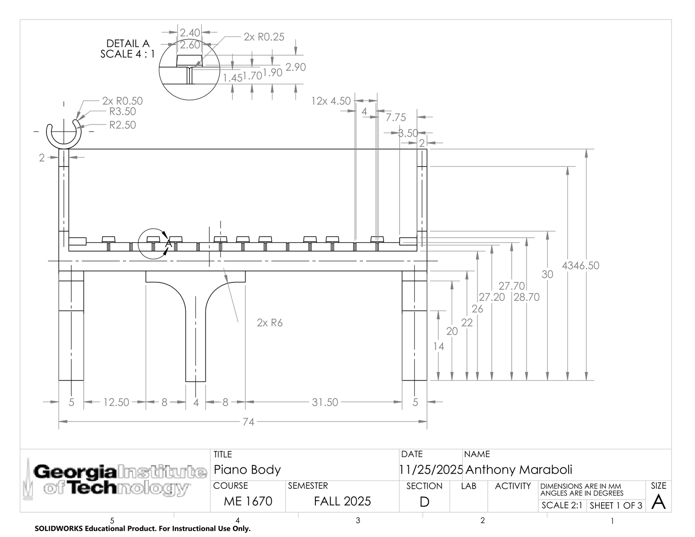

Grand Piano Music Box
A miniature grand piano modeled in SolidWorks, printed in three parts, and built to house a functioning music box movement — where closing the lid physically stops the music.

Objective
Design a printable object that reads unmistakably as a Steinway-style grand piano, fits inside a 3 × 3 × 3 in bounding box in every orientation, and integrates a real 18-note music box movement so that the lid's motion controls playback. The printed part measures 76.6 × 74.0 × 46.2 mm — about 3.0 × 2.9 × 1.8 in.
Design & manufacturing decisions
The assembly is three parts — body, lid, and support peg — joined by flexing snap-fit C-clips. The first design used a conventional piano hinge, but at this scale the knuckles would have been a few millimeters across and would not have printed reliably, so the hinge was abandoned in favor of clips at 1 mm wall thickness with 2.5 and 3.5 mm radii, tuned to flex without yielding. Body walls were set to 2 mm for stiffness, and the underside was left largely hollow to cut material and print time without touching visible geometry.
The functional interface came from the movement manufacturer's own dimensioned drawing: a cylindrical housing in the interior corner captures the stopper pin, and a pass-through bore in the base clears the wind-up shaft. Open the lid and the pin rises and the music plays; close it and the lid presses the pin down and stops it. A SolidWorks assembly with concentric, coincident, and perpendicular mates verified hinge clearances, the peg's seating angle in the lid's spherical socket, and bounding-box compliance before anything was sent to the printer.
Dimensional verification
About 20 features across all three parts were measured with calipers against their CAD values. Most deviated by only 0.1–0.3 mm, and a consistent pattern showed up: external dimensions printed slightly small, internal ones slightly large — the expected signature of extrusion width and layer rounding on FDM.
| Feature | CAD | Printed | Diff |
|---|---|---|---|
| Music box pin bore ø | 5.00 | 4.97 | 0.60% |
| Global width | 74.00 | 73.99 | 0.01% |
| Global height | 46.50 | 46.22 | 0.60% |
| Lid width | 76.00 | 76.21 | 0.28% |
| Peg snap-fit gap | 3.50 | 2.70 | 22.9% |
All values in millimeters. The peg's snap gap closing up by 0.8 mm was the largest deviation and worked in the design's favor — the part is meant to flex, so the tighter interference made the joint more secure without risking fracture.
The lid's C-clip never printed. In CAD the cylindrical hinge bar met the flat body wall at a true tangent — mathematically valid, but a zero-thickness, non-manifold contact that the slicer read as having no surface to generate toolpath against, so it skipped the feature entirely. The lid was bonded in place on the physical model. The fix is straightforward and identified: add a small rectangular support block behind the hinge cylinder so the circle overlaps a printable flat face rather than touching it at an infinitesimal point.


